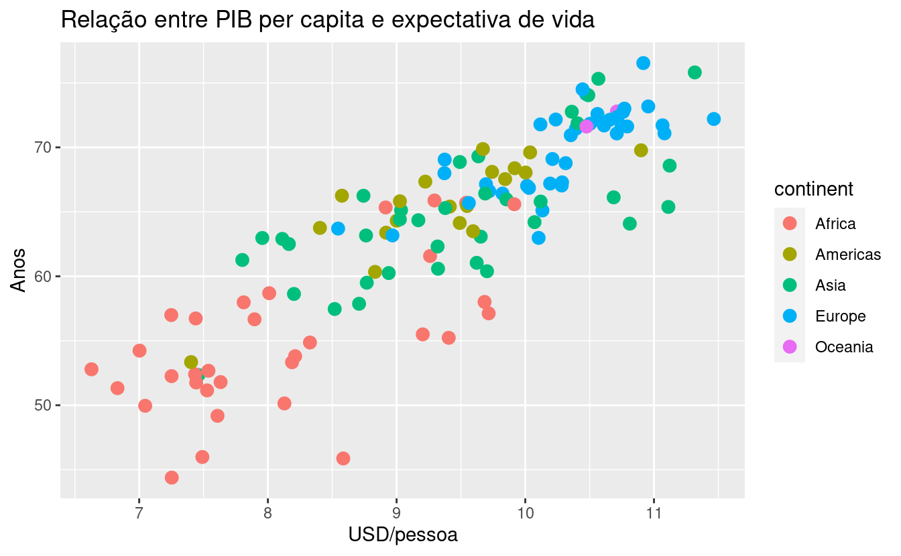
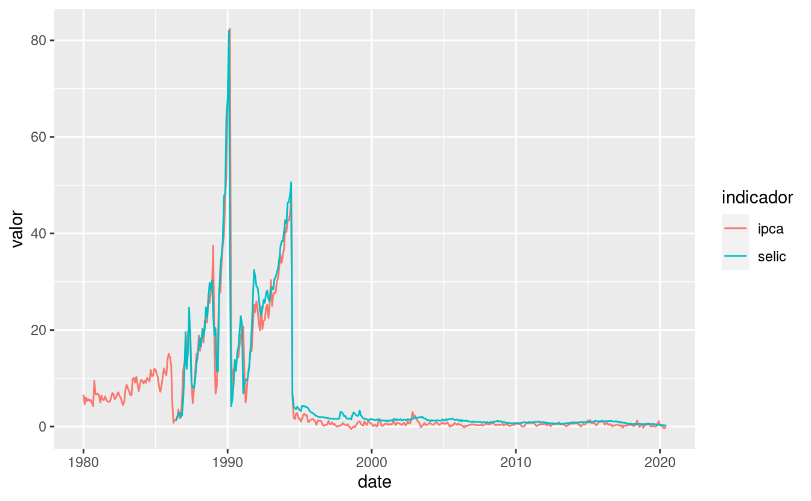
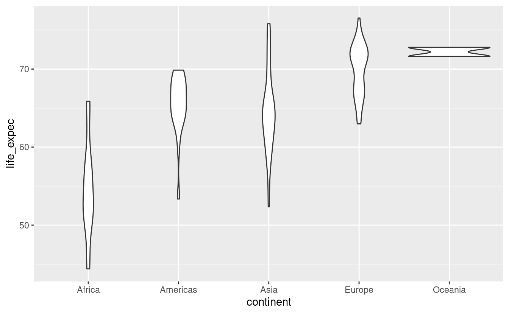
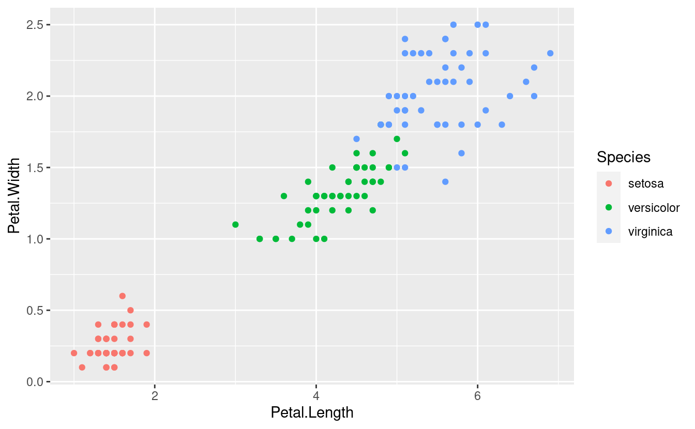
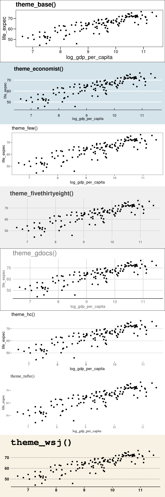
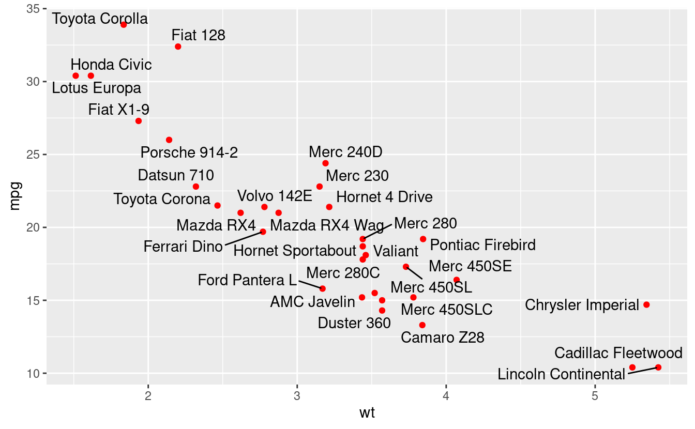

12 Visualizações de dados (ggplot2)
Pacotes deste capítulo:
library(readxl)
library(tidyverse)
library(ISLR)
library(RColorBrewer)
library(ggthemes)
library(hrbrthemes)
library(treemapify)
library(gapminder)
library(sf)
library(geobr)
library(readxl)
library(janitor)
# novos:
library(ggrepel)
library(countrycode)
library(patchwork)
library(wpp2019)
library(rbcb) # remotes::install_github('wilsonfreitas/rbcb')O ggplot2 é mais um pacote desenvolvido por Hadley Wickham, o criador, por exemplo, do tidyr e do dplyr. A ideia do pacote, ainda que com algumas modificações, vem de uma obra chamada The Grammar of Graphics, que é uma maneira de descrever um gráfico a partir dos seus componentes. Dessa forma, teoricamente, ficaria mais fácil entender a construção de gráficos mais complexos.
Esse pacote é estruturado de forma que a “gramática” seja utilizada para um gráfico a partir de múltiplas camadas. As camadas serão formadas por dados, mapeamentos estéticos, transformações estatísticas dos dados, objetos geométricos (pontos, linhas, barras etc.) e ajuste de posicionamento. Além disso, existem outros componentes, como os sistemas de coordenadas (cartesiano, polar, mapa etc.) e, se for o caso, divisões do gráfico em subplots (facet). Um simples exemplo de múltiplas camadas seria um gráfico de pontos adicionado de uma curva de ajustamento.
Uma forma geral (template) para entender-se a estrutura do ggplot2, segundo o próprio Hadley Wickhan, no livro R for Data Science, é a seguinte:
ggplot(data = <DATA>) +
<GEOM_FUNCTION>(
mapping = aes(<MAPPINGS>),
stat = <STAT>,
position = <POSITION>
) +
<COORDINATE_FUNCTION> +
<FACET_FUNCTION> # dividir o gráfico em subplotsA ideia é que todo gráfico pode ser representado por essa forma. No entanto, na criação de um gráfico, não é necessário especificar-se todas as partes acima. O ggplot2 já oferece um padrão para o sistema de coordenadas, para o stat e position. O facet (subplot) só será utilizado quando necessário.
Além disso, existem as escalas que são utilizadas para controlar o mapeamento dos dados em relação aos atributos estéticos do gráfico. Por exemplo: suponha que no seu gráfico exista uma coluna que é uma variável categórica com três classes possíveis e as cores do objeto geométrico estejam associadas a essa variável. Automaticamente, o ggplot2 definirá uma cor pra cada classe. No entanto, você pode alterar a escala de cores para ter controle sobre elas. O mesmo vale para os valores apresentados nos eixos x e y.
Uma observação importante é que apesar dos dados estarem na função ggplot() (<DATA>), eles também podem ser incluídos diretamente em cada objeto geométrico. Isto será útil quando for necessário criar-se uma nova camada a partir de dados diferentes daqueles que estão inicialmente nos gráficos.
Dessa forma, incorporando essas observações, um template estendido seria o abaixo:
ggplot(data = <DATA>) +
<GEOM_FUNCTION>(
mapping = aes(<MAPPINGS>),
stat = <STAT>,
position = <POSITION>,
data = <DATA> # pode receber os dados diretamente
) +
<SCALE_FUNCTION> + # uma para cada elemento estético
<COORDINATE_FUNCTION> +
<FACET_FUNCTION> # dividir o gráfico em subplotsTambém é importante ressaltar-se que, como todo sistema de gráficos, é possível alterar-se todos os títulos e rótulos do gráfico, além do controle sobre as características do tema do gráfico (cor do fundo, estilo da fonte, tamanho da fonte etc).
12.1 Dataset do módulo
Para este módulo, usaremos o dataset World Happiness Report, ou o Relatório Mundial da Felicidade, que é uma medição da felicidade publicado pela Rede de Soluções para o Desenvolvimento Sustentável da ONU (SDSN, na sigla em inglês). Leia o artigo na Wikipedia para mais informações.
# baixe o arquivo do endereco:
download.file("https://s3.amazonaws.com/happiness-report/2018/WHR2018Chapter2OnlineData.xls",
destfile = "felicidade.xls")# importar a planilha
df_feliz <- read_excel("felicidade.xls", sheet = 1)
# limpar o nome das colunas
df_feliz <- janitor::clean_names(df_feliz)
# renomear algumas colunas
df_feliz <- df_feliz %>%
rename(life_expec = healthy_life_expectancy_at_birth)
# olhar dados
glimpse(df_feliz)## Rows: 1,562
## Columns: 19
## $ country <chr> "Afghanistan", "Afghanistan", "Afghanistan",…
## $ year <dbl> 2008, 2009, 2010, 2011, 2012, 2013, 2014, 20…
## $ life_ladder <dbl> 3.723590, 4.401778, 4.758381, 3.831719, 3.78…
## $ log_gdp_per_capita <dbl> 7.168690, 7.333790, 7.386629, 7.415019, 7.51…
## $ social_support <dbl> 0.4506623, 0.5523084, 0.5390752, 0.5211036, …
## $ life_expec <dbl> 49.20966, 49.62443, 50.00896, 50.36730, 50.7…
## $ freedom_to_make_life_choices <dbl> 0.7181143, 0.6788964, 0.6001272, 0.4959014, …
## $ generosity <dbl> 0.18181947, 0.20361446, 0.13763019, 0.175329…
## $ perceptions_of_corruption <dbl> 0.8816863, 0.8500354, 0.7067661, 0.7311085, …
## $ positive_affect <dbl> 0.5176372, 0.5839256, 0.6182655, 0.6113873, …
## $ negative_affect <dbl> 0.2581955, 0.2370924, 0.2753238, 0.2671747, …
## $ confidence_in_national_government <dbl> 0.6120721, 0.6115452, 0.2993574, 0.3073857, …
## $ democratic_quality <dbl> -1.92968953, -2.04409266, -1.99180996, -1.91…
## $ delivery_quality <dbl> -1.6550844, -1.6350248, -1.6171761, -1.61622…
## $ standard_deviation_of_ladder_by_country_year <dbl> 1.774662, 1.722688, 1.878622, 1.785360, 1.79…
## $ standard_deviation_mean_of_ladder_by_country_year <dbl> 0.4765997, 0.3913617, 0.3948027, 0.4659422, …
## $ gini_index_world_bank_estimate <dbl> NA, NA, NA, NA, NA, NA, NA, NA, NA, NA, NA, …
## $ gini_index_world_bank_estimate_average_2000_15 <dbl> NA, NA, NA, NA, NA, NA, NA, NA, NA, NA, 0.30…
## $ gini_of_household_income_reported_in_gallup_by_wp5_year <dbl> NA, 0.4419058, 0.3273182, 0.3367642, 0.34453…Sentiram falta de uma coluna com o nome do continente? Vamos também importar um dataset que contém o continente de cada país, fornecido pelo pacote countrycode.
# consertar manualmente os nomes de certos paises
df_feliz$country[df_feliz$country == "Bosnia and Herzegovina"] <- "Bosnia & Herzegovina"
df_feliz$country[df_feliz$country == "Czech Republic"] <- "Czechia"
df_feliz$country[df_feliz$country == "Hong Kong S.A.R. of China"] <- "Czechia"
df_feliz$country[df_feliz$country == "Taiwan Province of China"] <- "Taiwan"
# consulte a documentação do dataset
# ?countrycode::codelist
df_continente <- countrycode::codelist %>%
# selecionar colunas importantes
select(country = country.name.en, continent, country_code = iso3n) %>%
# filtrar fora os paises sem continentes
filter(!is.na(continent))
# criar dataframe com juncao dos dois
df_feliz <- inner_join(df_feliz, df_continente, by = "country")
# coletar dados de populacao a partir de outro dataset, do pacote wpp2019
data(pop)
df_populacao <- pop %>%
select(country_code, `2020`) %>%
rename(populacao_2020 = 2)
df_feliz <- df_feliz %>%
left_join(df_populacao, by = 'country_code')
# criar dataset apenas para o ano mais recente
df_2017 <- df_feliz %>%
filter(year == max(year))Para quebrar-se a barreira inicial, vamos criar um exemplo por partes de um gráfico do PIB per capita e da expectativa de vida dos países em 2017:
# Inicia o plot
g <- ggplot(df_2017)
# Adicionar pontos (geom_point) e
# vamos mapear variáveis a elementos estéticos dos pontos
# Size = 3 define o tamanho de todos os pontos
g <- g +
geom_point(aes(x = log_gdp_per_capita,
y = life_expec,
color = continent),
size = 3)
# Rótulos (títulos)
g <- g +
labs(title = 'Relação entre PIB per capita e expectativa de vida',
y = 'Anos',
x = 'USD/pessoa')
g## Warning: Removed 6 rows containing missing values (geom_point).
Detalharemos cada parte do gráfico, mas vale falar-se rapidamente sobre o código acima. Primeiramente, passamos um conjunto de dados para o ggplot. Depois, adicionamos uma camada de pontos, mapeando as variáveis log_gdp_per_capita e life_expec para as posições de cada ponto nos eixos x e y, respectivamente, e a variável continent para a cor de cada ponto. Em seguida, alteramos a escala de cor, definindo seu título, os rótulos (labels) e os valores (values) para as cores. Por fim, definimos os títulos/rótulos do gráfico.
Nas próximas seções, falaremos com mais detalhes sobre cada componente, começando pelo mapeamento estético.
12.2 Mapeamento Estético
O mapeamento estético é o mapeamento das variáveis dos dados para as características visuais dos objetos geométricos (pontos, barras, linhas etc.). Isto é feito a partir da função aes(). E quais são as características visuais de um objeto geométrico? Abaixo segue uma lista não exaustiva:
- Posição (
xey); - Cor (
color); - Tamanho (
size); - Preenchimento (
fill); - Transparência (
alpha); - Texto (
label).
Como vimos no exemplo acima, mapeamos três variáveis para três características visuais de cada ponto: posição x, posição y e cor. Nos próximos exemplos, outros elementos estéticos serão utilizados, conforme o objeto geométrico selecionado.
12.3 Objetos geométricos e tipos de gráficos
Os objetos geométricos começam com a expressão geom_ e são seguidos pelo tipo de objeto. Por exemplo, geom_point() para pontos e geom_bar() para barras. A tabela abaixo apresenta os tipos de objetos geométricos utilizados para criar-se alguns tipos de gráficos populares.
| Tipo | Objeto Geométrico |
|---|---|
| Dispersão (scatterplot) | geom_point() |
| Gráfico de bolhas | geom_point() |
| Gráfico de barras | geom_col() e geom_bar() |
| Histograma | geom_histogram() |
| Boxplot | geom_boxplot() |
| Densidade | geom_density() |
| Gráfico de linhas | geom_line() |
Nesse material, os principais tipos de objetos geométricos serão demonstrados a partir de exemplos. A lista completa de objetos geométricos e as descrições dos argumentos estão na documentação do ggplot2.
É importante saber-se que um gráfico do ggplot2 pode ter mais de um objeto geométrico, cada um formando uma camada. Por exemplo, uma camada de pontos e outra de linhas que conectam os pontos.
Vamos, primeiramente, criar um gráfico com pontos:
Note que o aes() está sendo usado diretamente na função ggplot() e não no objeto geométrico. O que isto significa? Que o mapeamento estético definido na função ggplot() é global. Ou seja, é aplicado para todos os objetos geométricos daquele gráfico, a menos que seja explicitado novamente em alguma camada.
Para finalizarmos essa breve introdução a objetos geométricos, adicionemos mais uma camada ao gráfico:
ggplot(df_2017, aes(x = log_gdp_per_capita,
y = life_expec)) +
geom_point() +
geom_smooth(method = "lm")No exemplo acima, também não foi necessário definir os mapeamentos estéticos da camada geom_smooth(), pois eles foram herdados das definições da camada principal, a ggplot(). O que aconteceria, no entanto, caso fosse desejado pintar as cores de cada ponto de acordo com alguma variável, como o continente do país?
ggplot(df_2017, aes(x = log_gdp_per_capita,
y = life_expec,
color = continent)) +
geom_point() +
geom_smooth(method = "lm")Note que a camada geom_smooth() herdou o mapeamento color, de forma que foi criada uma reta de ajuste para cada continente. Isso pode até ser desejável, mas e se o objetivo for destacar a cor apenas dos pontos, mantendo apenas uma reta de ajuste para todos os continentes?
Seria necessário então alterar o atributor color apenas da camada alvo.
ggplot(df_2017, aes(x = log_gdp_per_capita,
y = life_expec)) +
geom_point(aes(color = continent)) +
geom_smooth(method = "lm")12.3.1 Escolhendo o tipo de gráfico
Antes de decidir qual gráfico você utilizará, é preciso saber o que se deseja representar. O objetivo guiará o tipo de gráfico mais adequado. A imagem abaixo apresenta uma lista bastante completa de possibilidades de gráficos, dos mais simples aos mais complexos:

Entre neste link para visualizar a imagem com zoom.
12.3.2 Gráfico de Dispersão (geom_point())
geom_point(mapping = NULL, data = NULL, stat = "identity", position = "identity",
..., na.rm = FALSE, show.legend = NA, inherit.aes = TRUE)O gráfico de dispersão é bastante usado para verificar-se relações entre duas variáveis quantitativas.
Como queremos um gráfico de pontos, o objeto geométrico natural é o geom_point(). Esse objeto geométrico tem os seguintes elementos estéticos:
Os parâmetros estéticos (aes) são:
xyalphacolourfillshapesizestroke
## Warning: Removed 6 rows containing missing values (geom_point).
Vamos mapear a variável continent ao elemento estético color e shape:
ggplot(df_2017, aes(x = log_gdp_per_capita,
y = life_expec)) +
geom_point(aes(color = continent,
shape = continent))## Warning: Removed 6 rows containing missing values (geom_point).Automaticamente o ggplot2 criou uma escala para as cores e formatos dos pontos. O usuário pode alterar este mapeamento utilizando as funções scale_*_*.
Por fim, fica aqui a lista com os tipos de shapes:
Perceba que os formatos de 21 a 24 possuem preenchimento (fill). Assim, no código abaixo definiremos o preenchimento, o tamanho do ponto e a espessura para aqueles formatos que possuem contornos.
ggplot(df_2017, aes(x = log_gdp_per_capita,
y = life_expec)) +
geom_point(aes(color = continent,
shape = continent,
fill = continent)) +
#scale_color_discrete("Continente") +
scale_shape_manual("Continente", values = c(19, 21, 22, 23, 24)) +
labs(title = "Relação entre Renda per Capita e Expectativa de Vida - 2007",
x = "Renda per Capita (escala log 10)",
y = "Expectativa de Vida")## Warning: Removed 6 rows containing missing values (geom_point).12.3.3 Gráficos de Bolhas
O gráfico de bolha é uma extensão natural do gráfico de pontos. Ele permite observar-se possíveis relações entre as três variáveis. Para este tipo de gráfico, são necessárias três variáveis: duas para indicarem as posições x e y e uma terceira para definir o tamanho do ponto (size). Vamos utilizar a variável populacao_2020 (população):
## Rows: 134
## Columns: 22
## $ country <chr> "Afghanistan", "Albania", "Algeria", "Argent…
## $ year <dbl> 2017, 2017, 2017, 2017, 2017, 2017, 2017, 20…
## $ life_ladder <dbl> 2.661718, 4.639548, 5.248912, 6.039330, 4.28…
## $ log_gdp_per_capita <dbl> 7.460144, 9.373718, 9.540244, 9.843519, 9.03…
## $ social_support <dbl> 0.4908801, 0.6376983, 0.8067539, 0.9066991, …
## $ life_expec <dbl> 52.33953, 69.05166, 65.69919, 67.53870, 65.1…
## $ freedom_to_make_life_choices <dbl> 0.4270109, 0.7496110, 0.4366705, 0.8319662, …
## $ generosity <dbl> -0.106340349, -0.035140377, -0.194670126, -0…
## $ perceptions_of_corruption <dbl> 0.9543926, 0.8761346, 0.6997742, 0.8410525, …
## $ positive_affect <dbl> 0.4963486, 0.6692409, 0.6419796, 0.8094226, …
## $ negative_affect <dbl> 0.3713262, 0.3338841, 0.2887100, 0.2917173, …
## $ confidence_in_national_government <dbl> 0.2611785, 0.4577375, NA, 0.3054303, 0.24690…
## $ democratic_quality <dbl> NA, NA, NA, NA, NA, NA, NA, NA, NA, NA, NA, …
## $ delivery_quality <dbl> NA, NA, NA, NA, NA, NA, NA, NA, NA, NA, NA, …
## $ standard_deviation_of_ladder_by_country_year <dbl> 1.454051, 2.682105, 2.039765, 2.409329, 2.32…
## $ standard_deviation_mean_of_ladder_by_country_year <dbl> 0.5462828, 0.5780961, 0.3886071, 0.3989398, …
## $ gini_index_world_bank_estimate <dbl> NA, NA, NA, NA, NA, NA, NA, NA, NA, NA, NA, …
## $ gini_index_world_bank_estimate_average_2000_15 <dbl> NA, 0.3032500, 0.2760000, 0.4760667, 0.32506…
## $ gini_of_household_income_reported_in_gallup_by_wp5_year <dbl> 0.2865989, 0.4104880, 0.5275558, 0.3941758, …
## $ continent <chr> "Asia", "Europe", "Africa", "Americas", "Asi…
## $ country_code <dbl> 4, 8, 12, 32, 51, 36, 40, 31, 48, 50, 112, 5…
## $ populacao_2020 <dbl> 38928.341, 2877.800, 43851.043, 45195.777, 2…df_2017 %>%
ggplot(aes(x = log_gdp_per_capita,
y = life_expec,
size = populacao_2020)) +
geom_point() +
labs(title = "Relação entre Renda per Capita e Expectativa de Vida - 2007",
x = "Renda per Capita (escala log 10)",
y = "Expectativa de Vida")## Warning: Removed 6 rows containing missing values (geom_point).
12.3.4 Gráficos de Barras
Os gráficos de barras/colunas são geralmente utilizados para comparações entre categorias (variáveis qualitativas). No ggplot2 podemos usar dois objetos geométricos distintos:
geom_col(mapping = NULL, data = NULL, position = "stack", ...,
width = NULL, na.rm = FALSE, show.legend = NA, inherit.aes = TRUE)Os parâmetros estéticos (aes) são:
x
y
alphacolourfilllinetypesize
No exemplo do dataset, um gráfico de barras é uma boa opção para calcular a população total por continente:
df_feliz %>%
group_by(continent) %>%
summarise(pop_total = sum(populacao_2020)) %>%
ggplot(aes(x = continent, y = pop_total)) +
geom_col()## `summarise()` ungrouping output (override with `.groups` argument)Uma pergunta recorrente é: Como ordenar as barras em ordem crescente/decrescente? Para isso, pode-se utilizar a função fct_reorder() no momento do mapeamento. Fica mais claro com um exemplo:
df_feliz %>%
group_by(continent) %>%
summarise(pop_total = sum(populacao_2020)) %>%
ggplot(aes(x = fct_reorder(continent, pop_total),
y = pop_total)) +
geom_col()## `summarise()` ungrouping output (override with `.groups` argument)Vamos, agora, criar um gráfico em que se compara a expectativa de vida média por continente em no menor e no maior ano da série temporal:
df_feliz %>%
filter(year %in% c(2010, 2017)) %>%
# Converte o ano para factor - será categoria no gráfico
mutate(year = as.character(year)) %>%
group_by(continent, year) %>%
summarise(life_expec_media = mean(life_expec)) %>%
ggplot(aes(x = continent, y = life_expec_media, fill = year)) +
geom_col()## `summarise()` regrouping output by 'continent' (override with `.groups` argument)Para continente, o gráfico empilhou as barras. Isto se deve ao argumento position = stack. Para colocar as barras lado a lado, utilizamos o valor “dodge”:
df_feliz %>%
filter(year %in% c(2010, 2017)) %>%
# Converte o ano para factor - será categoria no gráfico
mutate(year = as.character(year)) %>%
group_by(continent, year) %>%
summarise(life_expec_media = mean(life_expec)) %>%
ggplot(aes(x = continent, y = life_expec_media, fill = year)) +
geom_col(position = "dodge")## `summarise()` regrouping output by 'continent' (override with `.groups` argument)12.3.5 Gráficos de linhas
Os gráficos de linhas são, geralmente, utilizados para apresentar-se a evolução de uma variável quantitativa em um intervalo de tempo.
geom_line(mapping = NULL, data = NULL, stat = "identity", position = "identity",
na.rm = FALSE, show.legend = NA, inherit.aes = TRUE, ...)Os parâmetros estéticos (aes) são:
xyalphacolourlinetypesize
Série temporal é definida como uma variável contínua mensurada em intervalos regulares de tempo. A melhor representação visual para dados desse tipo são gráficos de linha, que são úteis para mostrar o comportamento de uma variável ao longo do tempo.
Como exemplo para gráficos de linha, vamos plotar a evolução de dois importantes indicadores econômicos brasileiros: a taxa SELIC e o índice IPCA, ambos mensalizados. Para obter esses indicadores, usamos o pacote rbcb:
# Importar para o R dados das series.
lista_datasets <- rbcb::get_series(code = c(ipca = 433, selic = 4390))
# O objeto retornado é uma lista de dois dataframes:
str(lista_datasets)## List of 2
## $ ipca : tibble [486 × 2] (S3: tbl_df/tbl/data.frame)
## ..$ date: Date[1:486], format: "1980-01-01" "1980-02-01" "1980-03-01" ...
## ..$ ipca: num [1:486] 6.62 4.62 6.04 5.29 5.7 5.31 5.55 4.95 4.23 9.48 ...
## $ selic: tibble [411 × 2] (S3: tbl_df/tbl/data.frame)
## ..$ date : Date[1:411], format: "1986-06-01" "1986-07-01" "1986-08-01" ...
## ..$ selic: num [1:411] 1.27 1.95 2.57 2.94 1.96 ...# Voce pode acessar cada dataframe usando a sintaxe NOME_DA_LISTA$NOME_DO_OBJETO:
str(lista_datasets$selic)## tibble [411 × 2] (S3: tbl_df/tbl/data.frame)
## $ date : Date[1:411], format: "1986-06-01" "1986-07-01" "1986-08-01" "1986-09-01" ...
## $ selic: num [1:411] 1.27 1.95 2.57 2.94 1.96 ...# Vamos então criar apenas um dataset que corresponde a junção dos dois dataframes
df_st <- left_join(lista_datasets$ipca,
lista_datasets$selic,
by = "date")
# conferindo o novo dataframe criado
head(df_st)## # A tibble: 6 x 3
## date ipca selic
## <date> <dbl> <dbl>
## 1 1980-01-01 6.62 NA
## 2 1980-02-01 4.62 NA
## 3 1980-03-01 6.04 NA
## 4 1980-04-01 5.29 NA
## 5 1980-05-01 5.7 NA
## 6 1980-06-01 5.31 NATemos uma coluna de data (date), cuja classe é Date e será usada como eixo x no gráfico de séries temporais:
Adicionar geom_smooth(method = "loess") ajuda a distinguir movimentos de tendência na série temporal:
df_st %>%
filter(date >= as.Date("2008-01-01")) %>%
ggplot(aes(x = date, y = selic)) +
geom_line() +
geom_smooth(method = "loess", se = FALSE)## `geom_smooth()` using formula 'y ~ x'É possível incluir no gráfico mais de uma variável no eixo y. Uma das alternativas é simplesmente acrescentar mais uma camada geom_line() com a nova variável:
ggplot(df_st, aes(x = date, y = ipca)) +
geom_line() +
# adicionar mais uma camada de geom_line
geom_line(aes(y = selic), color = "blue")## Warning: Removed 77 row(s) containing missing values (geom_path).No entanto, a melhor maneira de se fazer isso é converter os dados para o formato long (tidy):
## # A tibble: 6 x 3
## date indicador valor
## <date> <chr> <dbl>
## 1 1980-01-01 ipca 6.62
## 2 1980-01-01 selic NA
## 3 1980-02-01 ipca 4.62
## 4 1980-02-01 selic NA
## 5 1980-03-01 ipca 6.04
## 6 1980-03-01 selic NA# antes de proceder com o restante do exercicio, vamos salvar o dataset para
# o usar nos proximos modulos
write_rds(df_st_tidy, "series_ipca_selic.rds")Note que indicador é uma coluna categórica e valor, numérica. Portanto, a primeira será mapeada à aesthetic y e a segunda a color.
Agora, a variável indicador é mapeada ao atributo color.
## Warning: Removed 77 row(s) containing missing values (geom_path).
Notou como o período antes de 1995 representava uma realidade muito diferente da atual? Vamos então filtrar os dados a partir desse ano.
12.3.6 Histogramas
geom_histogram(mapping = NULL, data = NULL, stat = "bin",
position = "stack", ..., binwidth = NULL, bins = NULL, na.rm = FALSE,
show.legend = NA, inherit.aes = TRUE)Os histogramas são utilizados para representar-se a distribuição de dados de uma variável quantitativa em intervalos contínuos. Esses intervalos são chamados de bins. Para cada bin, será apresentada a quantidade de valores que estão naquele intervalo.
## `stat_bin()` using `bins = 30`. Pick better value with `binwidth`.A função geom_histogram(), por padrão, “quebra” a variável em 30 intervalos. É possível mudar esse comportamento especificando o argumento bins:
# reduzindo o numero de intervalos
df_feliz %>%
ggplot(aes(x = life_expec)) +
geom_histogram(bins = 10)# aumentando o número de intervalos
df_feliz %>%
ggplot(aes(x = life_expec)) +
geom_histogram(bins = 40)Outra maneira de redefinir os intervalos de um histograma é mudando o argumento binwidth, que controla a largura dos intervalos. Não é possível definir os argumentos bins e binwidth de uma só vez; ou um ou o outro.
No histograma acima, ao definir a largura dos intervalos como 5, o histograma criou intervalos usando como centros os números 45, 50, 55, etc. Portanto, os intervalos são [42,5 - 47,5), [47,5 - 52,5), etc.
É possível també definir os limites dos intervalos. Por exemplo, caso você deseje que os intervalos comecem com números que terminem em 5, deve-se alterar o argumento boundary:
Assim, conseguimos criar uma visualização que mostra que a grande maioria dos países possui uma expectativa de vida maior que 60 anos, e que alguns poucos países possuem uma expectativa de vida menor que 50 anos e maior que 75.
Como você já deve ter imaginado, é possível mudar aspectos visuais do histograma alterando suas aesthetics, como mudar a cor do histograma por valores atributos ou mapear alguma variável à cor do histograma. Veja que a cor de um histograma é definida pela propriedade fill, pois color altera apenas a cor das bordas das barras:
12.3.7 Boxplots e violinplots
O boxplot é uma representação comum para apresentar-se a distribuição de uma variável a partir de seus quantis. A imagem abaixo detalha como um boxplot é formado.

Detalhes sobre o bloxplot
O boxplot também pode ser usado para verificar-se a distribuição de variável para um conjunto de valores de uma segunda variável. Por exemplo: qual é a distribuição da expectativa de vida por ano?
Vemos que existe um possível outlier em 1992. Quando falarmos sobre anotações, voltaremos a este gráfico.
Para termos uma visão da distribuição geral dos valores por ano, podemos utilizar o geom_violin(). O violinplot baseia-se na densidade de probabilidade de uma variável contínua. Assim, é possível verificar-se em quais intervalos existe uma maior chance de ocorrência. Isto é representado pela parte mais larga do objeto.

12.3.8 Textos/Rótulos
As funções geom_text() e geom_label() servem para acrescentar camadas de texto no gráfico. A única diferença entre as duas é que geom_label() desenha um retângulo no fundo do texto, possivelmente melhorando sua leitura. Ambas funções geom_text() dependem de três aesthetics: x e y, que correspondem às posições dos textos a serem plotados, e label, que é o texto a ser plotado.
No exemplo abaixo, não especificamos x e y em geom_text() porque a função herda as definidas na função ggplot():
geom_label(mapping = NULL, data = NULL, stat = "identity", position = "identity",
..., parse = FALSE, nudge_x = 0, nudge_y = 0,
label.padding = unit(0.25, "lines"), label.r = unit(0.15, "lines"),
label.size = 0.25, na.rm = FALSE, show.legend = NA, inherit.aes = TRUE)
geom_text(mapping = NULL, data = NULL, stat = "identity", position = "identity",
..., parse = FALSE, nudge_x = 0, nudge_y = 0, check_overlap = FALSE,
na.rm = FALSE, show.legend = NA, inherit.aes = TRUE)Os parâmetros estéticos (aes) são:
labelxyalphaanglecolourfamilyfontfacehjustlineheightsizevjust
Para adicionar textos ou rótulos, utilizamos, respectivamente, o geom_text() e o geom_label(), que se diferenciam na formatação. Isto ficará mais claro nos exemplos a seguir:
df_2017 %>%
group_by(continent) %>%
summarise(life_expec_media = round(mean(life_expec))) %>%
ggplot(aes(x = continent, y = life_expec_media)) +
geom_col() +
geom_text(aes(label = life_expec_media),
vjust = 2)## `summarise()` ungrouping output (override with `.groups` argument)df_2017 %>%
group_by(continent) %>%
summarise(life_expec_media = round(mean(life_expec))) %>%
ggplot(aes(x = continent, y = life_expec_media)) +
geom_col() +
geom_label(aes(label = life_expec_media),
vjust = 2)## `summarise()` ungrouping output (override with `.groups` argument)Suponha que no primeiro gráfico de pontos mostrado no material, que mostra a relação entre PIB per capita e expectativa de vida, você deseja também acrescentar os nomes dos países:
df_2017 %>%
ggplot(aes(x = log_gdp_per_capita,
y = life_expec)) +
geom_point() +
geom_text(aes(label = country))## Warning: Removed 6 rows containing missing values (geom_point).## Warning: Removed 6 rows containing missing values (geom_text).Como era de se esperar, o gráfico ficou muito poluído. Vamos então reduzir os pontos que queremos mostrar os nomes dos respectivos países apenas aos países dos continentes americanos. A estrategia, então, consiste em criar um novo dataframe com esses países e mudar o argumento data em geom_text:
america <- df_2017 %>%
filter(continent == "Americas")
df_2017 %>%
ggplot(aes(x = log_gdp_per_capita,
y = life_expec)) +
geom_point() +
geom_text(data = america, aes(label = country))## Warning: Removed 6 rows containing missing values (geom_point).Melhorou, mas ainda assim ficou poluído. Uma boa solução para esse problema é o pacote ggrepel, que internamente calcula a melhor posição entre os pontos da camada de texto, seja geom_text() ou geom_label(), de forma que não haja conflito de posição entre pontos. A única alteração necessária é mudar geom_text para geom_text_repel:
df_2017 %>%
ggplot(aes(x = log_gdp_per_capita,
y = life_expec)) +
geom_point() +
geom_text_repel(data = america, aes(label = country))## Warning: Removed 6 rows containing missing values (geom_point).12.3.9 Anotações
Para criarmos anotações no ggplot2, podemos utilizar a função annotate().
Primeiro, vamos manipular os dados para saber qual é aquele ponto:

## # A tibble: 1 x 22
## country year life_ladder log_gdp_per_cap… social_support life_expec freedom_to_make… generosity
## <chr> <dbl> <dbl> <dbl> <dbl> <dbl> <dbl> <dbl>
## 1 Haiti 2017 3.82 7.40 0.647 53.3 0.484 0.385
## # … with 14 more variables: perceptions_of_corruption <dbl>, positive_affect <dbl>, negative_affect <dbl>,
## # confidence_in_national_government <dbl>, democratic_quality <dbl>, delivery_quality <dbl>,
## # standard_deviation_of_ladder_by_country_year <dbl>,
## # standard_deviation_mean_of_ladder_by_country_year <dbl>, gini_index_world_bank_estimate <dbl>,
## # gini_index_world_bank_estimate_average_2000_15 <dbl>,
## # gini_of_household_income_reported_in_gallup_by_wp5_year <dbl>, continent <chr>, country_code <dbl>,
## # populacao_2020 <dbl>Com essas informações, podemos adicionar uma anotação ao gráfico:
ggplot(df_2017, aes(x = continent,
y = life_expec)) +
geom_boxplot() +
annotate("text", x = "Americas", y = 52, label = "Haiti") Também podemos adicionar segmentos e retângulos com o annotate(). Vamos marcar o período de 1982 a 2002 com um retângulo:
12.3.10 Cleveland Dot Plot
O cleveland dot plot é uma visualização que pode substituir os gráficos de barras. A ideia é que o gráfico fica menos poluído com os pontos, fazendo com que o leitor foque no que é importante. Vamos criar um gráfico para comparar as expectativas de vida no ano de 2007 para os países das Américas:
df_2017 %>%
filter(continent == "Americas") %>%
ggplot(aes(x = life_expec, y = reorder(country, life_expec))) +
geom_point(size = 3, color = "dodgerblue") Esse tipo de gráfico também pode apresentar mais de um ponto para cada valor da variável categórica (país):
df_feliz %>%
filter(year %in% c(2010, 2017),
continent == "Americas") %>%
ggplot(aes(x = log_gdp_per_capita, y = country, color = factor(year))) +
geom_point(aes(color = factor(year)))No gráfico acima, vemos dois pontos para cada país, um para representar 1987 e outro para 2007.
Para completarmos o gráfico, precisamos adicionar uma linha conectando esses dois pontos. Esse gráfico é chamado de connected dot plot. Um detalhe importante é que queremos criar uma linha por país, assim, usaremos o elemento estético group para obter o resultado esperado:
gapminder %>%
filter(year %in% c(1987, 2007),
continent == "Americas") %>%
ggplot(aes(x = lifeExp, y = country)) +
geom_line(aes(group = country)) +
geom_point(aes(color = factor(year))) +
labs(title = "Expectativa de vida por país - 1987 e 2007",
y = "País",
x = "Anos",
color = "Ano") +
theme_ipsum(plot_title_size = 12,
axis_title_size = 10) +
theme(panel.grid.major.y = element_line(linetype = "dashed"))Para finalizar, vamos ordenar o eixo y pela expectativa de vida:
gapminder %>%
filter(year %in% c(1987, 2007),
continent == "Americas") %>%
ggplot(aes(x = lifeExp, y = reorder(country, lifeExp, max))) +
geom_line(aes(group = country), color = "grey50") +
geom_point(aes(color = factor(year))) +
labs(title = "Expectativa de vida por país - 1987 e 2007",
y = "País",
x = "Anos",
color = "Ano") +
theme_ipsum(plot_title_size = 12,
axis_title_size = 10) +
theme(panel.grid.major.y = element_line(linetype = "dashed"))12.3.11 Mapas de calor
Para representar uma relação um pouco mais complexa, a de duas variáveis categóricas e uma numérica, pode-se usar um mapa de calor.
Suponha que você deseja plotar a correlação entre todos os possíveis pares de correlação das variáveis de um dataset:
# calcular correlacao entre as variaveis numericas do dataset de felicidade
df_feliz_num <- df_2017 %>%
select(life_ladder, log_gdp_per_capita, social_support,
life_expec, perceptions_of_corruption) %>%
# removar NAs
na.omit()
# criar matriz de correlacao
matriz_correl <- cor(df_feliz_num)
# de uma olhada no objeto criado
# matriz_correl
# transformar para dataframe
matriz_correl <- as.data.frame(matriz_correl)
# conveter rownames para uma coluna
matriz_correl <- rownames_to_column(matriz_correl, "var1")
# converter dataframe para formato tidy
matriz_correl_tidy <- matriz_correl %>%
gather(var2, correlacao, -var1)
head(matriz_correl_tidy)## var1 var2 correlacao
## 1 life_ladder life_ladder 1.0000000
## 2 log_gdp_per_capita life_ladder 0.7531552
## 3 social_support life_ladder 0.7665324
## 4 life_expec life_ladder 0.7359065
## 5 perceptions_of_corruption life_ladder -0.5163756
## 6 life_ladder log_gdp_per_capita 0.7531552Assim, no dataframe var1 e var2, temos duas variáveis categóricas (os pares de variáveis) e uma numérica (a correlação entre as duas variáveis).
A função do ggplot2 para criar um mapa de calor é geom_tile, que precisa de três aesthetics: os eixos x e y, que são as variáveis categóricas, e fill, que será a variável contínua que definirá a cor dos quadrados:
Devido ao tamanho dos nomes das variáveis, o eixo x ficou difícil de ler. Uma solução é mudar o ângulo dos nomes, isto é, colocá-los na vertical. A função theme(), que ainda será mostrada em detalhes neste módulo, possui um argumento para fazer isso:
12.4 Escalas
O controle sobre as escalas do gráfico é fundamental no ajuste de um gráfico. Em geral, o ggplot2, como outros pacotes gráficos, fornece as escalas automaticamente, não sendo necessário o entendimento de como se controlar este componente. No entanto, se o interesse é ter controle sobre todos os aspectos de um gráfico, esse componente é fundamental.
Veja o gráfico abaixo:

Note que a cor está mapeada para a variável Species. O ggplot2, automaticamente, criou a seguinte escala:
| Species | Cor |
|---|---|
| setosa | vermelho |
| versicolor | verde |
| virginica | azul |
Todavia, é comum haver interesse em alterar-se essas cores, ou seja, alterar-se a escala de cor. Como fazer isso no ggplot2? Podemos usar, por exemplo, a função scale_color_manual():
ggplot(iris, aes(x = Petal.Length, y = Petal.Width, color = Species)) +
geom_point() +
scale_color_manual(values = c("orange", "black", "red"))Utilizamos a função scale_color_manual() em razão da variável Species ser categórica. Para o ggplot2, dados categóricos são discretos, e a função citada permite criar-se uma escala discreta customizada. No entanto, essa não é a única função para controlar escala de cor. Existem outras como scale_color_discrete(), scale_color_continuous(), scale_color_gradient() etc. A utilização de cada função depende do tipo de dado que se está associando ao elemento estético color. Adiante, entraremos em mais detalhes sobre os tipos de dados.
As funções utilizadas para controlar-se as escalas dos elementos de um gráfico do ggplot2 seguem um padrão. Todas iniciam-se com scale_, depois o nome do elemento estético (color, fill, x etc.) e, por fim, o tipo/nome da escala que será aplicada.
Abaixo, continuaremos o exemplo anterior, alterando as escalas dos eixos x e y. Note que as variáveis Petal.Length e Petal.Width são variáveis numéricas/contínuas. Dessa forma, utilizaremos as funções scale_x_continuous() e scale_y_continuous():
ggplot(iris, aes(x = Petal.Length, y = Petal.Width, color = Species)) +
geom_point() +
scale_color_manual(values = c("orange", "black", "red")) +
scale_x_continuous(name = "Petal Length", breaks = 1:7) +
scale_y_continuous(name = "Petal Width", breaks = 0:3, limits = c(0, 3))No gráfico acima, definimos quais seriam os pontos em que rótulos deveriam ser exibidos em cada eixo. Além disso, no eixo y, definimos que os limites seriam 0 e 3.
12.4.1 Tipos de Variáveis
Para melhor uso das escalas, é preciso saber o tipo de variável que foi mapeado para cada elemento estético. Vamos rapidamente montar essa relação:
| Classe | Exemplo | Tipo no ggplot2 |
|---|---|---|
| numeric | seq(0, 1, length.out = 10) | continuous |
| integer | 1L:10L | continuous ou discrete |
| character | c(“Sim”, “Não”) | discrete |
| factor | factor(c(“Sim”, “Não”)) | discrete |
| date | seq(as.Date(“2000/1/1”), by = “month”, length.out = 12) | date |
Lembre-se que o padrão do ggplot é scale_, depois o nome do elemento estético (color, fill, x etc.) e, por fim, o tipo/nome da escala que será aplicada. É importante que o usuário saiba o tipo de dado, pois assim saberá com mais facilidade qual é o tipo de escala que deve ser escolhido.
Vamos, em sequência, entrar em mais detalhes para escalas dos eixos (x e y) e de cores. Espera-se que a intuição desenvolvida a partir dos exemplos das escalas para esses elementos estéticos seja útil para os demais elementos estéticos.
12.4.2 Eixos
12.4.2.1 Variáveis Contínuas
scale_x_continuous(name = waiver(), breaks = waiver(), minor_breaks = waiver(),
labels = waiver(), limits = NULL, expand = waiver(),
oob = censor, na.value = NA_real_, trans = "identity")
scale_y_continuous(name = waiver(), breaks = waiver(), minor_breaks = waiver(),
labels = waiver(), limits = NULL, expand = waiver(),
oob = censor, na.value = NA_real_, trans = "identity")Vamos começar editando os valores dos eixos x e y.
df_2017 %>%
mutate(populacao_milhoes = populacao_2020 / 1000) %>%
ggplot(aes(x = populacao_milhoes,
y = life_expec)) +
geom_point() +
# definindo manualmente a escala do eixo x
scale_x_continuous(breaks = c(0, 100, 200, 300, 400, 500, 1500)) +
# definindo os intervalos da escala do eixo y
scale_y_continuous(breaks = scales::breaks_width(5),
minor_breaks = NULL)12.4.2.2 Variáveis discretas
Apesar do help não apresentar todos os argumentos para as escalas discretas, podemos usar quase todos que foram listados para escala contínua.
scale_x_discrete(..., expand = waiver(), position = "bottom")
scale_y_discrete(..., expand = waiver(), position = "left")No exemplo abaixo, alteraremos os rótulos para uma escala discreta, que originalmente contém os valores Yes e No.
12.4.2.3 Variáveis de Datas
Quando estamos trabalhando com séries temporais, é comum que datas sejam associadas a algum eixo do gŕafico, geralmente ao eixo x. As funções padrão para controle de escalas dos eixos, para variáveis de datas, são as seguintes:
scale_x_date(name = waiver(), breaks = waiver(), date_breaks = waiver(),
labels = waiver(), date_labels = waiver(), minor_breaks = waiver(),
date_minor_breaks = waiver(), limits = NULL, expand = waiver())
scale_y_date(name = waiver(), breaks = waiver(), date_breaks = waiver(),
labels = waiver(), date_labels = waiver(), minor_breaks = waiver(),
date_minor_breaks = waiver(), limits = NULL, expand = waiver())
scale_x_datetime(name = waiver(), breaks = waiver(), date_breaks = waiver(),
labels = waiver(), date_labels = waiver(), minor_breaks = waiver(),
date_minor_breaks = waiver(), limits = NULL, expand = waiver())
scale_y_datetime(name = waiver(), breaks = waiver(), date_breaks = waiver(),
labels = waiver(), date_labels = waiver(), minor_breaks = waiver(),
date_minor_breaks = waiver(), limits = NULL, expand = waiver())O scale_*_date é utilizado para variáveis do tipo Date e scale_*_datetime para variáveis do tipo POSIXct. A classe POSIXct aceita informações relacionadas a tempo/horário e a classe Date aceita apenas dia, mês e ano.
O mais importante é a possibilidade de alterar-se o modo como as datas são apresentadas a partir do argumento date_labels. Para isso, utilizaremos um exemplo a partir dos dados economics. Primeiro, observa-se o resultado padrão do ggplot2:
## # A tibble: 6 x 6
## date pce pop psavert uempmed unemploy
## <date> <dbl> <dbl> <dbl> <dbl> <dbl>
## 1 1967-07-01 507. 198712 12.6 4.5 2944
## 2 1967-08-01 510. 198911 12.6 4.7 2945
## 3 1967-09-01 516. 199113 11.9 4.6 2958
## 4 1967-10-01 512. 199311 12.9 4.9 3143
## 5 1967-11-01 517. 199498 12.8 4.7 3066
## 6 1967-12-01 525. 199657 11.8 4.8 3018Agora, suponha que queremos alterar o gráfico para o formato “Jan/1970”:
O %b/%Y é usado para definir-se o formato de data desejado. Para ver a lista de formatos, use help(strptime). Para os breaks, temos duas opções: utilizar-se o argumento breaks, informando um vetor de datas, ou usar-se o argumento date_breaks, em que se informa a frequência dos breaks (por exemplo, “1 month” e “5 years”). Veja os exemplos abaixos:
ggplot(economics, aes(x = date, y = unemploy)) +
geom_line() +
scale_x_date(date_breaks = "5 years", date_labels = "%Y")
12.4.3 Escalas de Cores (color) e Preenchimento (fill)
Como nos casos dos eixos x e y, o tipo da variável utilizada define qual o tipo de escala.
| Tipo da Variável | Escala | Descrição |
|---|---|---|
| Discreta | hue | escolhe n cores igualmente espaçadas em um disco de cores. É possível editar a luminosidade e a saturação. |
| grey | escala de cinza | |
| brewer | ver pacote RColorBrewer | |
| identity | usa as cores inseridas na própria variável | |
| manual | escolhe as cores manualmente | |
| Contínua | gradient | cria um gradiente de duas cores (low-high) |
| gradient2 | cria um gradiente de cores divergentes (low-mid-high) | |
| gradientn | cria um gradiente com n cores |
A opção hue usa a seguinte roda de cores:
Figura 12.1: Roda de Cores - hue
A opção brewer pode usar as paletas de cores disponíveis no pacote RColorBrewer.
library(RColorBrewer)
display.brewer.all(n=NULL, type="all", select=NULL, exact.n=TRUE,
colorblindFriendly=FALSE)
No exemplo abaixo, vamos utilizar a função brewer.pal, que retorna um vetor de cores de alguma paleta do pacote RColorBrewer. O objeto paleta.gradientn recebe nove cores da paleta Reds. Essas cores são utilizadas na função scale_fill_gradientn().
matriz_correl_tidy %>%
ggplot(aes(x = var1, y = var2, fill = correlacao)) +
geom_tile() +
theme(axis.text.x = element_text(angle = 90)) +
scale_fill_distiller(palette = "RdYlGn")Alguns pacotes também fornecem escalas de cores próprias, como é o caso do pacote viridis.
12.5 Subplots (facet)
facets são um excelente recurso do ggplot2 que permitem segmentar um gráfico em subgráficos de acordo com uma variável categórica.
Existem duas maneiras de definir facets no ggplot2: facet_wrap(), ideal para apenas uma variável, e facet_grid() ideal para uma combinação de duas variáveis.
Já vimos como acrescentar a informação do continente em um gráfico de pontos mudando o atributo color. Uma alternativa é criar um subgráfico para cada continente por meio de facets.
- Painéis em formato de grid:
facet_grid(facets, margins = FALSE, scales = "fixed", space = "fixed", shrink = TRUE,
labeller = "label_value", as.table = TRUE, switch = NULL, drop = TRUE)- Converte painéis de uma dimensão para duas dimensões:
facet_wrap(facets, nrow = NULL, ncol = NULL, scales = "fixed", shrink = TRUE,
labeller = "label_value", as.table = TRUE, switch = NULL, drop = TRUE,
dir = "h")Antes de mais nada, vamos criar um exemplo para o facet_wrap():
df_2017 %>%
ggplot(aes(x = log_gdp_per_capita,
y = life_expec)) +
geom_point() +
facet_wrap(vars(continent))## Warning: Removed 6 rows containing missing values (geom_point).Usamos a sintaxe vars(coluna). Ou seja, indicamos que queremos quebrar os gráficos pela variável continent.
O ggplot2 determinou automaticamente o número de colunas e linhas e fixou as escalas dos eixos. No entanto, podemos definir o número de linhas ou colunas a partir dos argumentos nrow e ncol. Também é possível definir-se que cada gráfico tenha sua escala. No exemplo abaixo, deixaremos a escala do eixo y livre.
df_2017 %>%
ggplot(aes(x = log_gdp_per_capita,
y = life_expec)) +
geom_point() +
facet_wrap(vars(continent), scales = "free_y")## Warning: Removed 6 rows containing missing values (geom_point).
Caso se deseja utilizar mais de uma variável para criar os facets, usa-se a função facet_grid():
df_feliz %>%
# filtrar os anos de 2015 a 2017
filter(between(year, 2015, 2017)) %>%
ggplot(aes(x = log_gdp_per_capita,
y = life_expec)) +
geom_point() +
facet_grid(cols = vars(continent), rows = vars(year))## Warning: Removed 11 rows containing missing values (geom_point).12.6 Temas
O ggplot2 fornece alguns temas prontos. Todavia, o usuário pode alterar manualmente cada detalhe de um gráfico ou criar um tema que será utilizado em outras visualizações. Para editar o tema, será usada a função theme(). Nesta função, poderão ser alterados os elementos do tema, como a cor de fundo do painel, o tamanho da fonte do eixo x, a posição da legenda etc. A lista de elementos está disponível neste link.
Para cada elemento do tema, um tipo de objeto é esperado para realizar alterações. Por exemplo, para alterar-se o estilo do título do eixo x (axis.title.x) é preciso passar-se a função element_text(), que possui diversos parâmetros (família da fonte, tipo da fonte, cor, tamanho, alinhamento etc.). Além do element_text(), as principais funções para alterar-se elementos do tema são element_line(), element_rect() e element_blank(). O element_blank() é usado a fim de que nada seja desenhado para o elemento que recebe esta função.
Em um primeiro momento, pode parecer complicado alterar o tema via código, porém, conforme o usuário for praticando, essas alterações ficarão mais intuitivas. De toda forma, existe um addin para o RStudio que ajuda a customizar-se um gráfico do ggplot2 a partir de uma interface de point and click. Para instalá-lo, faça o seguinte:
Para exemplificar a alteração do tema manualmente:
ggplot(df_2017, aes(x = log_gdp_per_capita,
y = life_expec)) +
geom_point() +
theme(text = element_text(face = "bold"),
panel.grid.major = element_line(colour = "gray80"),
axis.title = element_text(size = 14),
panel.background = element_rect(fill = "gray100"))## Warning: Removed 6 rows containing missing values (geom_point).12.6.1 Temas disponíveis no ggplot2
p <- ggplot(df_2017, aes(x = log_gdp_per_capita,
y = life_expec)) +
geom_point()
p + theme_gray() +
labs(title = "theme_gray()")
p + theme_bw() +
labs(title = "theme_bw()")
p + theme_linedraw() +
labs(title = "theme_linedraw()")
p + theme_light() +
labs(title = "theme_light()")
p + theme_minimal() +
labs(title = "theme_minimal()")
p + theme_classic() +
labs(title = "theme_classic()")
p + theme_dark() +
labs(title = "theme_dark()")
p + theme_void() +
labs(title = "theme_void()")## Warning: Removed 6 rows containing missing values (geom_point).
## Warning: Removed 6 rows containing missing values (geom_point).
## Warning: Removed 6 rows containing missing values (geom_point).
## Warning: Removed 6 rows containing missing values (geom_point).
## Warning: Removed 6 rows containing missing values (geom_point).
## Warning: Removed 6 rows containing missing values (geom_point).
## Warning: Removed 6 rows containing missing values (geom_point).
## Warning: Removed 6 rows containing missing values (geom_point).12.6.2 Temas no pacote ggthemes
O pacote ggthemes disponibiliza um conjunto de temas e escalas de cores. Vamos apresentar alguns temas disponíveis:
## Warning: Removed 6 rows containing missing values (geom_point).
## Warning: Removed 6 rows containing missing values (geom_point).
## Warning: Removed 6 rows containing missing values (geom_point).
## Warning: Removed 6 rows containing missing values (geom_point).
## Warning: Removed 6 rows containing missing values (geom_point).
## Warning: Removed 6 rows containing missing values (geom_point).
## Warning: Removed 6 rows containing missing values (geom_point).
## Warning: Removed 6 rows containing missing values (geom_point).
12.6.3 hrbrthemes
Alguns pacotes fornecem seus próprios temas. É o caso do hrbrthemes. Este pacote fornece um tema bastante interessante e será usado no resto deste capítulo. Como qualquer outro tema, se for necessário, você pode editá-lo com a função theme():
## Warning: Removed 6 rows containing missing values (geom_point).12.6.4 Setando o tema globalmente
Com o comando abaixo, todos os gráficos do seu script terão o mesmo tema:
12.7 Legendas
A melhor maneira de alterar as legendas de um gráfico do ggplot2, dando nomes mais amigáveis, é por meio da função labs().
p +
labs(x = "Log da PIB per capita",
y = "Expectativida de vida em anos",
title = "Relação entre PIB per capita e expectativida de vida",
subtitle = "Existe uma correlação positiva entre as duas variáveis",
# Aqui usamos '\n', um character especial do R, para
# adicioanar uma quebra de linha
color = "Continente\n do país",
caption = "Autor: Eu")## Warning: Removed 6 rows containing missing values (geom_point).
12.8 Mapas: plotando polígonos
Produzir mapas com o R nunca foi tão fácil como hoje, graças a avanços recentes dos pacotes sf e ggplot2. Foge muito do escopo deste curso explicar a estrutura de dados espaciais, como shapefiles. Mesmo sem esse entedimento, porém, é possível fazer gráficos com mapas de maneira muito simples.
O pacote geobr, desenvolvido pelo brasileiro Ítalo Cegatta, facilita a importação de arquivos shapefiles brasileiros.
# importar shapefiles de estados brasileiros
geo_ufs <- geobr::read_state(code_state = 'all', year = 2018)## Using year 2018## Loading data for the whole country##
|
| | 0%
|
|==== | 4%
|
|======= | 7%
|
|=========== | 11%
|
|=============== | 15%
|
|=================== | 19%
|
|====================== | 22%
|
|========================== | 26%
|
|============================== | 30%
|
|================================== | 33%
|
|===================================== | 37%
|
|========================================= | 41%
|
|============================================= | 44%
|
|================================================= | 48%
|
|==================================================== | 52%
|
|======================================================== | 56%
|
|============================================================ | 59%
|
|================================================================ | 63%
|
|=================================================================== | 67%
|
|======================================================================= | 70%
|
|=========================================================================== | 74%
|
|=============================================================================== | 78%
|
|================================================================================== | 81%
|
|====================================================================================== | 85%
|
|========================================================================================== | 89%
|
|============================================================================================== | 93%
|
|================================================================================================= | 96%
|
|=====================================================================================================| 100%## Simple feature collection with 6 features and 5 fields
## geometry type: MULTIPOLYGON
## dimension: XY
## bbox: xmin: -73.99045 ymin: -13.6937 xmax: -46.06151 ymax: 5.271841
## CRS: 4674
## code_state abbrev_state name_state code_region name_region geom
## 1 11 RO Rondônia 1 Norte MULTIPOLYGON (((-62.89216 -...
## 2 12 AC Acre 1 Norte MULTIPOLYGON (((-71.07772 -...
## 3 13 AM Amazonas 1 Norte MULTIPOLYGON (((-69.61341 -...
## 4 14 RR Roraima 1 Norte MULTIPOLYGON (((-63.97805 2...
## 5 15 PA Pará 1 Norte MULTIPOLYGON (((-46.38475 -...
## 6 16 AP Amapá 1 Norte MULTIPOLYGON (((-53.27918 2...Observe que o dataframe possui cinco colunas, sendo a última relacionada às informações espaciais sobre os polígonos dos estados que serão usadas para construir os mapas.
A sintaxe do ggplot2 para construir mapas é relativamente diferente: não é preciso definir nenhuma aesthetic, pois a função geom_sf internamente busca a coluna de polígonos presente no objeto:
A partir do gráfico base criado acima, as customizações seguem o padrão do ggplot2. Por exemplo, é possível mapear a cor os polígonos de acordo com uma variável presente nos dados, além de alterar aspectos visuais com a função theme:
ggplot(geo_ufs) +
# a linha abaixo da no mesmo que geom_sf(aes(geometry = geometry))
geom_sf(aes(geometry = geom,
# colorir os poligonos de acordo com sua regiao
fill = as.character(code_region))) +
# deixar o mapa mais limpo e sem eixos
theme(
panel.background = element_blank(),
panel.grid.major = element_line(color = "transparent"),
axis.text = element_blank(),
axis.ticks = element_blank()
) +
# mudar titulo da legenda
labs(fill = "Região")12.8.1 Projeto: plotando indicadores socioeconômicos em um mapa.
Neste exemplo, mostramos como o ggplot2 pode ser usado para produzir mapas muito informativos, mapeando a cor de cada polígono a uma variável numérica, como PIB ou população.
Observe o passo-a-passo de coleta e transformação dos dados do PIB per capita dos municípios brasileiros:
# origem do conjunto de dados:
# ftp://ftp.ibge.gov.br/Pib_Municipios/2017/base/base_de_dados_2010_2017_xls.zip
# baixe o arquivo, descompacte, abra no excel ou no libre office e salve como xlsx
# o R não consegue ler arquivos xls
df_pib <- read_excel('dados/base_de_dados_2010_2017_xls/PIB dos Municípios - base de dados 2010-2017.xlsx')
# limpar nomes das colunas
df_pib <- janitor::clean_names(df_pib)
# observe os dados:
glimpse(df_pib)## Rows: 44,545
## Columns: 43
## $ ano <dbl> …
## $ codigo_da_grande_regiao <dbl> …
## $ nome_da_grande_regiao <chr> …
## $ codigo_da_unidade_da_federacao <dbl> …
## $ sigla_da_unidade_da_federacao <chr> …
## $ nome_da_unidade_da_federacao <chr> …
## $ codigo_do_municipio <dbl> …
## $ nome_do_municipio <chr> …
## $ regiao_metropolitana <chr> …
## $ codigo_da_mesorregiao <dbl> …
## $ nome_da_mesorregiao <chr> …
## $ codigo_da_microrregiao <dbl> …
## $ nome_da_microrregiao <chr> …
## $ codigo_da_regiao_geografica_imediata <dbl> …
## $ nome_da_regiao_geografica_imediata <chr> …
## $ municipio_da_regiao_geografica_imediata <chr> …
## $ codigo_da_regiao_geografica_intermediaria <dbl> …
## $ nome_da_regiao_geografica_intermediaria <chr> …
## $ municipio_da_regiao_geografica_intermediaria <chr> …
## $ codigo_concentracao_urbana <dbl> …
## $ nome_concentracao_urbana <chr> …
## $ tipo_concentracao_urbana <chr> …
## $ codigo_arranjo_populacional <dbl> …
## $ nome_arranjo_populacional <chr> …
## $ hierarquia_urbana <chr> …
## $ hierarquia_urbana_principais_categorias <chr> …
## $ codigo_da_regiao_rural <dbl> …
## $ nome_da_regiao_rural <chr> …
## $ regiao_rural_segundo_classificacao_do_nucleo <chr> …
## $ amazonia_legal <chr> …
## $ semiarido <chr> …
## $ cidade_regiao_de_sao_paulo <chr> …
## $ valor_adicionado_bruto_da_agropecuaria_a_precos_correntes_r_1_000 <dbl> …
## $ valor_adicionado_bruto_da_industria_a_precos_correntes_r_1_000 <dbl> …
## $ valor_adicionado_bruto_dos_servicos_a_precos_correntes_exceto_administracao_defesa_educacao_e_saude_publicas_e_seguridade_social_r_1_000 <dbl> …
## $ valor_adicionado_bruto_da_administracao_defesa_educacao_e_saude_publicas_e_seguridade_social_a_precos_correntes_r_1_000 <dbl> …
## $ valor_adicionado_bruto_total_a_precos_correntes_r_1_000 <dbl> …
## $ impostos_liquidos_de_subsidios_sobre_produtos_a_precos_correntes_r_1_000 <dbl> …
## $ produto_interno_bruto_a_precos_correntes_r_1_000 <dbl> …
## $ produto_interno_bruto_per_capita_a_precos_correntes_r_1_00 <dbl> …
## $ atividade_com_maior_valor_adicionado_bruto <chr> …
## $ atividade_com_segundo_maior_valor_adicionado_bruto <chr> …
## $ atividade_com_terceiro_maior_valor_adicionado_bruto <chr> …# agregando dados por estado, calculando o pib por cidade
df_pib_uf <- df_pib %>%
# filtrar 2017
filter(ano == 2017) %>%
# filtrar fora DF
filter(sigla_da_unidade_da_federacao != 'DF') %>%
group_by(codigo_da_unidade_da_federacao) %>%
summarise(qtd_cidades = n(),
pib_uf = sum(produto_interno_bruto_a_precos_correntes_r_1_000),
pib_por_cidade = pib_uf/qtd_cidades)## `summarise()` ungrouping output (override with `.groups` argument)## # A tibble: 6 x 4
## codigo_da_unidade_da_federacao qtd_cidades pib_uf pib_por_cidade
## <dbl> <int> <dbl> <dbl>
## 1 11 52 43506499. 836663.
## 2 12 22 14271063. 648685.
## 3 13 62 93204175. 1503293.
## 4 14 15 12103236. 806882.
## 5 15 144 155195371. 1077746.
## 6 16 16 15479885. 967493.Com o dataframe de PIB por cidade criado, podemos o unir com o dataframe que contem os dados espaciais dos estados:
geo_uf_pib <- left_join(geo_ufs, df_pib_uf, by = c('code_state' = 'codigo_da_unidade_da_federacao'))
head(geo_uf_pib)## Simple feature collection with 6 features and 8 fields
## geometry type: MULTIPOLYGON
## dimension: XY
## bbox: xmin: -73.99045 ymin: -13.6937 xmax: -46.06151 ymax: 5.271841
## CRS: 4674
## code_state abbrev_state name_state code_region name_region qtd_cidades pib_uf pib_por_cidade
## 1 11 RO Rondônia 1 Norte 52 43506499 836663.4
## 2 12 AC Acre 1 Norte 22 14271063 648684.7
## 3 13 AM Amazonas 1 Norte 62 93204175 1503293.1
## 4 14 RR Roraima 1 Norte 15 12103236 806882.4
## 5 15 PA Pará 1 Norte 144 155195371 1077745.6
## 6 16 AP Amapá 1 Norte 16 15479885 967492.8
## geom
## 1 MULTIPOLYGON (((-62.89216 -...
## 2 MULTIPOLYGON (((-71.07772 -...
## 3 MULTIPOLYGON (((-69.61341 -...
## 4 MULTIPOLYGON (((-63.97805 2...
## 5 MULTIPOLYGON (((-46.38475 -...
## 6 MULTIPOLYGON (((-53.27918 2...Enfim, podemos proceder com a criação do mapa:
ggplot(geo_uf_pib) +
geom_sf(aes(fill = log(pib_por_cidade))) +
# mudar escala de cores para sequencial vermelha
scale_fill_distiller(type = "seq",
palette = "Greens",
direction = 1) +
# deixar o mapa mais limpo e sem eixos
theme(
legend.position = "bottom",
panel.background = element_blank(),
panel.grid.major = element_line(color = "transparent"),
axis.text = element_blank(),
axis.ticks = element_blank()
) +
labs(title = "PIB por cidade",
fill = NULL)12.9 Salvando Gráficos
Há duas formas de salvar o gráfico gerado pelo ggplot2. A primeira delas é clicando no botão Export na aba Plots. Lá existirão três opções: exportar para o clipboard, salvar como PDF ou salvar como imagem.
A outra opção é usar a função ggsave():
ggsave(filename, plot = last_plot(), device = NULL, path = NULL,
scale = 1, width = NA, height = NA, units = c("in", "cm", "mm"),
dpi = 300, limitsize = TRUE, ...)O argumento device é usado para escolher-se o tipo de arquivo (“eps”, “ps”, “tex” (pictex), “pdf”, “jpeg”, “tiff”, “png”, “bmp”, “svg” or “wmf”).
12.10 Extensões do ggplot2
Um conjunto de pacotes fornece extensões ao ggplot2. Ou seja, cria funcionalidades não existentes no pacote original.
Veja neste link uma galeria com as extensões. Aqui, exemplificaremos algumas:
12.10.1 ggrepel
O ggrepel é importante para evitar que textos (geom_text) e rótulos (geom_label) se sobreponham. Veja o mesmo gráfico sem e com o ggrepel:
library(ggrepel)
data(mtcars)
ggplot(mtcars, aes(wt, mpg)) +
geom_point(color = 'red') +
geom_text(aes(label = rownames(mtcars))) +
theme_ipsum(plot_title_size = 12,
axis_title_size = 10)library(ggrepel)
data(mtcars)
ggplot(mtcars, aes(wt, mpg)) +
geom_point(color = 'red') +
geom_text_repel(aes(label = rownames(mtcars))) +
theme_ipsum(plot_title_size = 12,
axis_title_size = 10)
12.10.2 gganimate
Outra extensão muito interessante é o gganimate. Com esta extensão é possível criar gifs (animações) de gráficos do ggplot2. O ponto fundamental é definir-se uma variável que controlará os frames, ou seja, as imagens que serão sobrepostas para compor-se a animação.
Veja o exemplo abaixo:
# O pacote não está no cran
#devtools::install_github("dgrtwo/gganimate")
library(gganimate)
p <- ggplot(gapminder, aes(x = gdpPercap, y = lifeExp,
size = pop, color = continent,
frame = year)) +
geom_point() +
scale_x_log10()
animation::ani.options(interval = 1)
x <- gganimate(p, filename = 'images/gapminder1.gif',
ani.width = 750,
ani.height = 450)
É possível suavizar a animação com o pacote tweenr. É um pouco complicado, mas fica o exemplo abaixo retirado deste post:
library(tweenr)
years <- unique(gapminder$year)
gapminder_list <- list()
for(i in 1:length(years)){
j <- years[i]
gapminder_list[[i]] <- gapminder %>%
filter(year == j)
}
tf <- tween_states(gapminder_list,
tweenlength = 2,
statelength = 0,
ease = rep("linear", length(gapminder_list)),
nframes = 308)
tf2 <- expand.grid(y = 80, x = 10^(2.5), year = seq(1957, 2007, 5))
tf2 <- split(tf2, tf2$year)
tf2 <- tween_states(tf2,
tweenlength = 2,
statelength = 0,
ease = rep("linear", length(tf2)),
nframes = 308)
tf2 <- tf2 %>%
mutate(year = rep(seq(1957, 2007, 5), each = 29)[1:310])
p2 <- ggplot(tf,
aes(x=gdpPercap, y=lifeExp, frame = .frame)) +
geom_point(aes(size=pop, color=continent), alpha=0.8) +
geom_text(data = tf2, aes(x = x, y = y, label = year)) +
xlab("GDP per capita") +
ylab("Life expectancy at birth") +
scale_x_log10()
animation::ani.options(interval = 1/20)
x <- gganimate(p2, filename = 'images/gapminder2.gif',
ani.width = 750,
ani.height = 450,
title_frame = FALSE)
12.11 Exercícios
12.11.1 Parte 1
Crie um gráfico de dispersão utilizando a base
gapminderpara o ano de 2007. Mapeie uma variável para o tamanho do ponto e adicione os títulos do gráfico e dos eixos.No gráfico anterior, como você faria para que o ponto do Brasil fosse identificado com uma cor adicional? Dica: se uma nova camada usar um segundo conjunto de dados é preciso informar usando o argumento
data. Exemplo:geom_point(data = novo_data_frame, ...).Crie um histograma da variável
wagea partir da base de dadosWagedo pacoteISLR. Crie uma visualização da distribuição da variávelwagepor nível da variável education. Mapeie a variável education para o elemento estéticofill.Crie um data.frame chamado
Wage2em que a variáveleducationé removida. Adicione a seguinte camada no início do código:
Veja e interprete o resultado.
- A partir do código abaixo, crie um gráfico que apresenta os dez países que tiveram maior crescimento do PIB em 2016 e aqueles dez que tiveram o menor. Use o
facet_wrappara quebrar a visualização em dois gráficos. Escolha o objeto geométricogeom_colougeom_point().
library(WDI)
library(dplyr)
gdp_growth <- WDI(indicator = "NY.GDP.MKTP.KD.ZG",
start = 2016,
end = 2016,
extra = TRUE)
# Remove regiões - ISO's com números
gdp_growth <- gdp_growth %>%
filter(!is.na(region) & region != "Aggregates" & !is.na(NY.GDP.MKTP.KD.ZG))- Utilize o mapa mundi disponível no pacote
chropletrMapse os dados que criamos no exercício anterior para plotar as variações do PIB em um mapa.
library(choroplethrMaps)
data("country.map")
# Dados - Crescimento do PIB em 2016
library(WDI)
library(dplyr)
gdp_growth <- WDI(indicator = "NY.GDP.MKTP.KD.ZG",
start = 2016,
end = 2016,
extra = TRUE)
# Remove regiões - ISO's com números
gdp_growth <- gdp_growth %>%
filter(!is.na(region) & region != "Aggregates" & !is.na(NY.GDP.MKTP.KD.ZG))
# Continue fazendo o join entre country.map e gdp_growth
# chaves: wb_a3 e iso3ccountry.map <- country.map %>%
left_join(gdp_growth, by = c("wb_a3" = "iso3c"))
ggplot(country.map, aes(x = long, y = lat, group = group)) +
geom_polygon(aes(fill = NY.GDP.MKTP.KD.ZG)) +
scale_fill_continuous("Var. % GDP") +
coord_quickmap()- Utilizando o código “NY.GDP.PCAP.KD” e o pacote
WDI, crie um gráfico do tipo connected dot plot comparando a renda per capita entre o Brasil e mais cinco países nos anos de 1990 e 2010.
12.11.2 Parte 2
Importe o arquivo salvo
herois_completo.csvno capítulo 06. Salve no objetoherois. Filtre os herois que possuem peso e altura maior que 0.Crie um histograma da variável altura.
- Analise a distribuição da variável peso em função da editora dos heróis.
Crie um gŕafico de barras mostrando a quantidade de heróis por editora. Ordene as barras em ordem descrescente. Acrescente uma camada de texto nas barras mostrando a quantidade exata.
Crie um gráfico de barras mostrando a quantidade de herois bons, maus ou neutros (variável
alignment) por editora. Use tantogeom_bar()comogeom_col()para isso, usando o argumentoposition = position_dodge()para separar as barras nas editoras.Repita o item anterior, trocando apenas o parâmeto
position = position_dodge()paraposition = position_fill()para observar a proporção de personagens bons, maus ou neutros em cada editora.Use o dplyr e o tidyr para criar um dataset chamado
hero_agg, que contem a quantidade de poderes agregado por editora e heroi. Dica: transforme as colunas de super-poderes em numéricas, converta o dataframe para formato tidy, agrupe os dados por editora e heroi e calcule a soma da coluna transformada de poderes.Faça um gráfico de barras mostrando os 10 herois de cada editora que possuem mais poderes. Dica: use facets para separa os herois de cada editora, usando
scales = "free_y" e drop = TRUE. Inverta os eixos.Faça um gráfico de densidade da distribuição da quantidade de poderes dos herois por editora. Use o parâmetro
alphapara aumentar a transparência das curvas.Para praticar com gráficos de séries temporais, usaremos outro dataset. Importe o dataset
economicsusando a funçãodata(). Observe os dados com a funçãohead(). Qual a periodicidade temporal dos dados (ex.: diário, semanal, mensal, anual) ?Faça um gráfico da variável
unemployao longo do tempo. Salve esse gráfico no objeto p, que será usado nos próximos itens.Acrescente uma camada de área sombreada destacando o período entre 2001 a 2005.
Acrescente algum comentário seu no gráfico usando a função
geom_text().Transforme o dataframe
economicspara o formato tidy. Faça um gráfico de linha de todos os indicadores econômicos ao longo do tempo, mapeando a aesthetic color à variável do nome do indicador. Note os problemas de escala do gráfico.Repita o item anterior, acrescentando uma camada de facets que separe os gráficos por indicador. Defina o parâmetro
scalespara ter escala livre no eixo y.